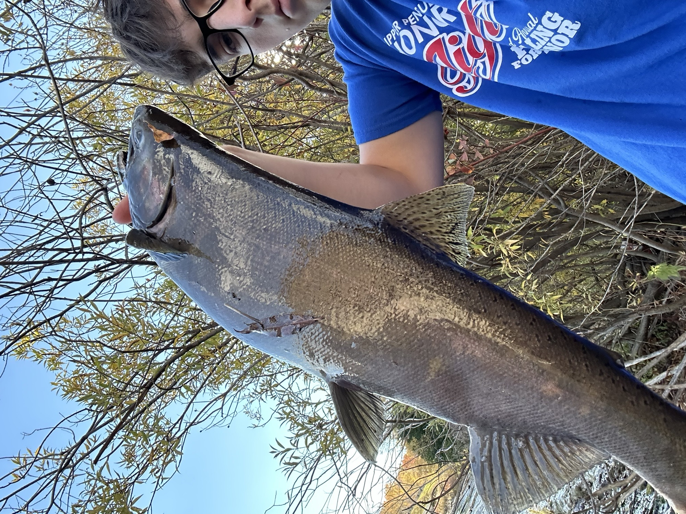
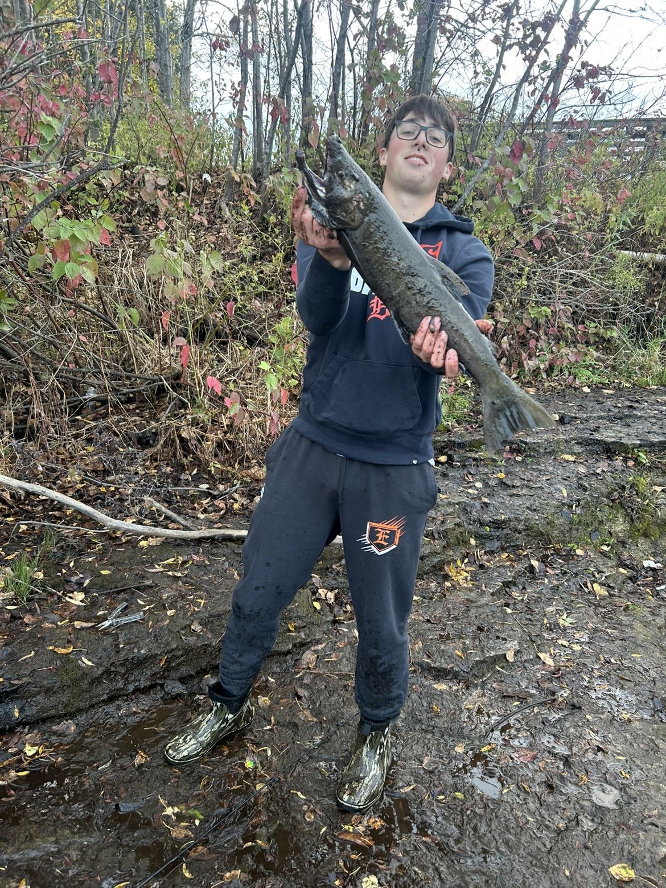

How I Got Into Fishing
My brother was a big part in getting me into fishing and all outdoors related things. I have a memories that i caught my first fish with my brother that I will never forget. This sparks my interest to go out there and keep catching new and bigger fish.
Why I Love Fishing
I love fishing for the relaxing adventure it holds. You never know what might happen during a fishing trip, you might meet someone, catch a different species than you've ever caught before, see deer, eagles, and many more cool things. It's the randomness of nature that I love.
My Favorite Fishing Spots
In my early days of fishing when i was about 12 years old.I would go to the same spot everyday of the summer. I would ride my bike about a mile to the Escanaba marina to catch panfish all day long with an occasional pike or bass.It wasn't anything special, until i got my drivers licesne. Then i could go anywhere and find new spots. Recently I have been fishing the Escanaba River by the first dam. I caught some pretty neat fish there.
 